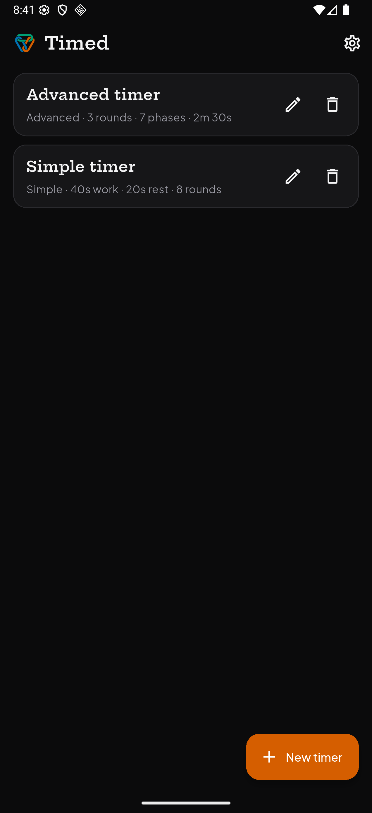
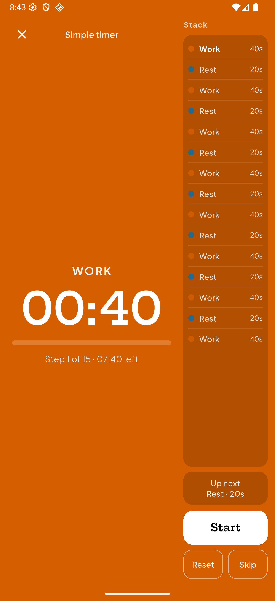
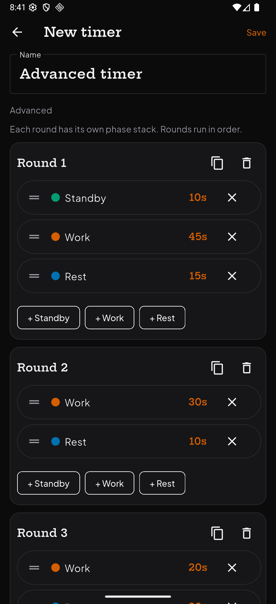
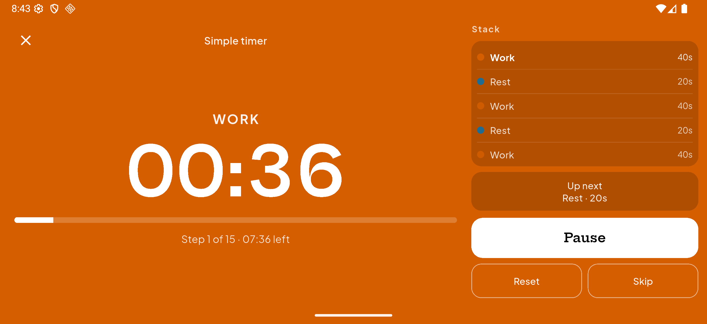
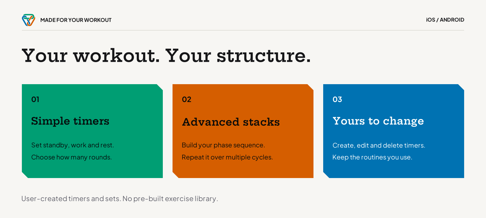
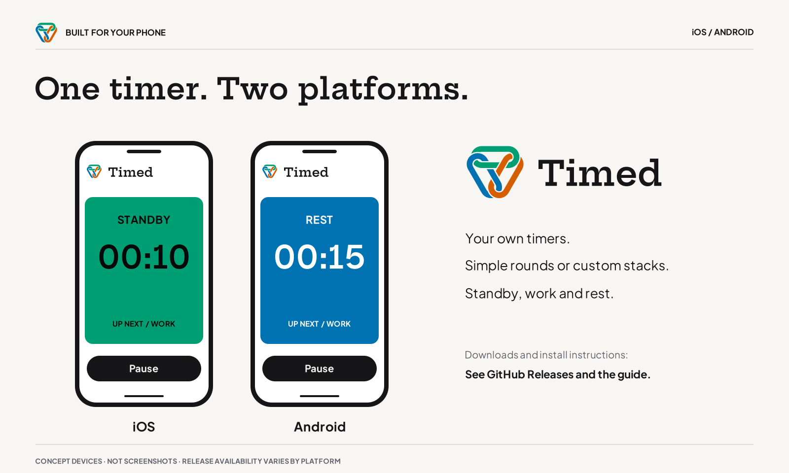

Timed
Make every interval yours.
A workout interval timer for iPhone and Android — simple rounds, or advanced rounds each with their own standby / work / rest stack.
Standby
Work
Rest
Make every interval yours.
A workout interval timer for iPhone and Android — simple rounds, or advanced rounds each with their own standby / work / rest stack.
Phases read across the room. Each block has its own color so you know where you are without staring at the digits.




Standby, work, rest, and rounds. Build a classic HIIT or Tabata-style timer in a few taps, then save it as your own.
Build rounds in order. Each round has its own phase stack — standby, work, and rest in any mix — so later rounds can differ from earlier ones.

Current release is on GitHub. Android packages are attached today; iOS builds need a Mac signing pass and will land on the same Releases page.

Source and releases are on the public GitHub repo. iOS packages appear on Releases when a signed Mac build is attached. No App Store or Play badges yet.